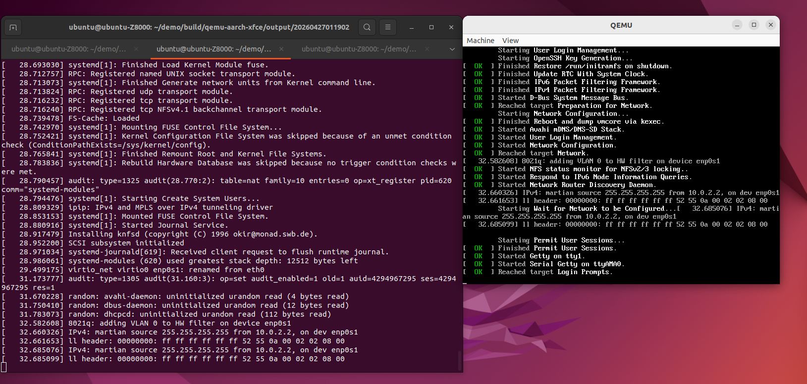
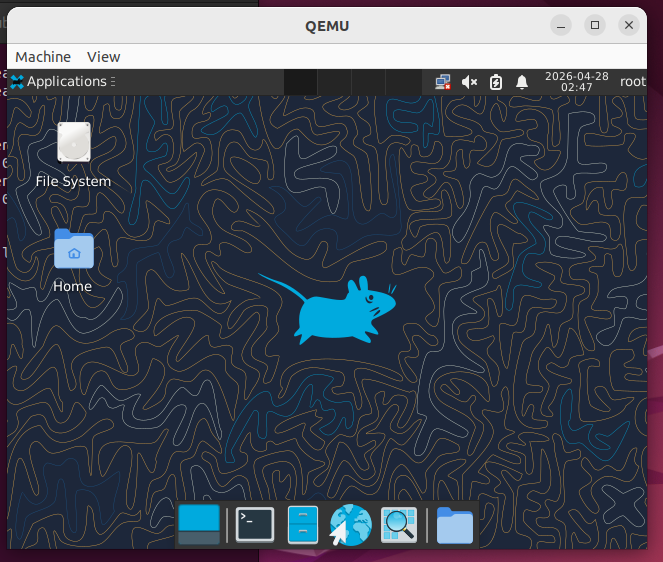

XFCE桌面系统支持
XFCE是一个轻量级的桌面环境，专为性能和灵活性而设计。它在保持低系统资源消耗的同时，提供了完整的桌面体验，包括窗口管理、文件管理、应用程序启动器等功能。XFCE采用模块化设计，允许用户根据需要选择安装组件，非常适合资源受限的嵌入式系统。
openEuler Embedded系统支持使用XFCE作为桌面环境，为嵌入式设备提供友好的图形用户界面。
构建指南
使用oebuild工具可以轻松构建包含XFCE桌面系统的openEuler Embedded镜像。以下是详细的构建流程：
初始化oebuild工作目录
$ oebuild init <work_dir> $ cd <work_dir> $ oebuild update
生成构建配置
$ oebuild generate -p qemu-aarch64 -f oebridge-xfce -d qemu-aarch64-xfce
执行此命令后，会在工作目录下创建`build/qemu-aarch64-xfce`编译目录。
进入编译目录并开始构建
$ cd build/qemu-aarch64-xfce $ oebuild bitbake openeuler-image
获取构建产物
构建完成后，在`output`目录下会生成带有时间戳的子目录，镜像文件存放在该子目录中：
$ ls output/<时间戳>/ Image openeuler-image-qemu-aarch64-<时间戳>.rootfs.cpio.gz vmlinux
Image: Linux内核镜像
openeuler-image-qemu-aarch64-<时间戳>.rootfs.cpio.gz: 根文件系统镜像
vmlinux: 带调试信息的内核镜像
测试方法
构建完成后，可以使用QEMU模拟器测试XFCE桌面系统。请确保在桌面环境下执行以下命令，而不是通过xshell等远程命令行连接。
启动QEMU模拟器
$ cd output/<时间戳> $ qemu-system-aarch64 \ -m 6G \ -smp 4 \ -M virt \ -cpu cortex-a72 \ -kernel ./Image \ -initrd ./openeuler-image-qemu-aarch64-<时间戳>.rootfs.cpio.gz \ -append "root=/dev/ram0 rw console=ttyAMA0 console=tty0" \ -serial stdio \ -display gtk \ -device virtio-gpu-pci \ -monitor none \ -device qemu-xhci \ -device usb-kbd \ -device usb-tablet
Note
请将命令中的`<时间戳>`替换为实际构建时生成的时间戳。
系统启动
QEMU启动后，会在终端显示内核启动日志，同时弹出QEMU窗口显示启动过程。

XFCE系统启动过程
登录系统
系统启动完成后，在QEMU窗口中会显示登录界面，输入用户名和密码即可登录：

XFCE登录界面
启动XFCE桌面
登录成功后，在终端中执行以下命令启动XFCE桌面：
$ startxfce4启动后，QEMU窗口将显示XFCE桌面环境：
XFCE桌面环境
使用示例
XFCE提供了丰富的桌面应用程序，以下是一些常用功能的演示：
注意事项
系统资源要求
建议至少分配6GB内存给QEMU模拟器，以确保XFCE桌面系统的流畅运行
CPU建议使用至少4核心配置
图形环境要求
必须在桌面环境下运行QEMU，不支持纯命令行环境
需要确保主机系统安装了GTK库，以支持QEMU的图形显示
首次登录
首次登录时需要设置root用户密码，密码强度要求：数字、字母、特殊字符组合最少8位
建议设置一个强密码以保证系统安全
网络连接
默认配置下，QEMU模拟器未启用网络连接
如果需要网络支持，可以在启动QEMU时添加网络相关参数
性能优化
对于资源受限的设备，可以通过配置XFCE的组件来减少资源消耗
可以禁用不需要的服务和自启动应用程序